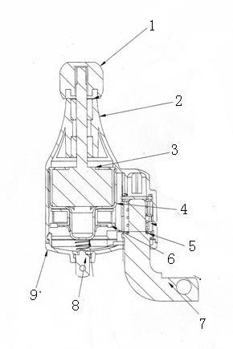

This product provide clean and green energy, it produce electric without any fuel. it works safty and silence. It's fashion, users can make a contribution for protect the world by low carbon life.
Model: POW31944M
http://www.seeedstudio.com/depot/images/product/Bidynamo.jpg
1. The max dia of the dynamo body is:40.5mm, the longest length of the main body is:94.5mm。
|  |
|
2. OUTPUT: 6V,3W
3. WARRENTY: 1 year
4. WORKING LIFE: 2-3 years
output power test under constant voltage
| Speed(km/h) | Output power(W) | Output volt(V) | Output current(A) |
|---|---|---|---|
| 5 | 0.56 | 6.00 | 0.126 |
| 15 | 1.89 | 6.00 | 0.369 |
| 30 | 4.09 | 6.00 | 0.560 |
constant-resistance load testing （18 ohms）
| speed（km/h） | Output power(W) | Output volt(V) | Output current(A) |
|---|---|---|---|
| 5 | 0.45 | 2.45 | 0.115 |
| 15 | 1.89 | 5.78 | 0.325 |
| 30 | 3.21 | 7.23 | 0.435 |
Tempreture test ：
| Surroundings temp. | Shell temp. | Temp. rise | Remarks |
|---|---|---|---|
| 20℃ | 55.2℃ | 32.2℃ | keep 30cm distances test |
Fix the dynamo on the front fork near to the wheel of the bicycle ,adjust the height to the suitable place .(pay attention to fixed side of the dynamo “left or right “, that must be matching.)
1、Move the wrench , let the dynamo roller touch the wheel edge at proper position .
The projects and application examples.
All the components used to produce the product.
Please list your question here:
A:Not if by directly you mean running the wires from the dynamo directly to an arduino, of course it can't do that. Because, like all generators, a dynamo like this will put out AC, which is fine for tungsten lamps.. (i.e. light bulbs) but LEDs all need DC, and so do solid state devices like Arduino. So you are always going to need a bridge rectifier *first*. What you add after that depends on your budget and your needs. An arduino needs steady voltage so for an arduino, you are going to need to use the generator essentially as a battery charger.. and then you power all your stuff *off that battery that gets charged.*
What you will need to do that with the most efficiency is ideally a DC to DC converter (Google "boost-buck converter") or at the very minimum just some kind of charging circuit powered by your bridge rectifier.
See the links down below.
A: Yes.. that would work for a few seconds to more than a minute.. depending on how bright an LED you use and the size of the capacitor you use.
Q: A battery? Of what specifications?
A: Google for any of the numerous sites (I gave you a head start below) that tell you how to build a bike light with a *standlight*. That is the search term you want.
Q: My intended use is to a) charge my cellphone, or b) power an Arduino and do cool stuff :)
A: That's *quite* doable but again, you'll need to change that (quite variable) 3-~12ish volts AC to DC at something more appropriate (and steady) If you use any on and off switch, in addition to the dynamo's own "switch" watch out that you use a voltage regulator because the voltage coming out of a dynamo - via diodes, *with no load* could easily charge a capacitor up to the dynamo's absolute *peak* output voltage which may be quite high. Then the instant you reconnected your LED, you could burn it out. If you leave your lights connected and on all the time and use a capacitor as a standlight, and just remove the dynamo from the wheel when you want to turn it off, thats not a problem.
Cheers --Nighto 01:37, 10 June 2011 (CST)
Many people who buy it here are using it for other purposes than bicycle lighting, so for them this all doesn't matter anyway.
Don't assume that people wont use it on bikes, given the fact its a bike dynamo, and its price, its a competitive option for bicyclists. And its a decent little dynamo, for the price, but it has to be mounted safely. They all do. That's just basic common sense.
If you have questions or other better design ideas, you can go to our forum or wish to discuss.
| Revision | Descriptions | Release |
|---|---|---|
| v0.9b | Initial public release | date |
Bug Tracker is the place you can publish any bugs you think you might have found during use. Please write down what you have to say, your answers will help us improve our products.
The Additional Idea is the place to write your project ideas about this product, or other usages you've found. Or you can write them on Projects page.
Click here to buy: http://www.seeedstudio.com/depot/bicycle-dynamo-with-bracket-6v-3w-p-798.html?cPath=155.
Other related products and resources.
This documentation is licensed under the Creative Commons Attribution-ShareAlike License 3.0 Source code and libraries are licensed under GPL/LGPL, see source code files for details.
Links to external webpages which provide more application ideas, documents/datasheet or software libraries.
How to connect dynamo wires
http://www.yellowjersey.org/dami.html
(believe it or not some people need to know)
http://pilom.com/BicycleElectronics/DynamoCircuits.htm
http://www.candlepowerforums.com/vb/forumdisplay.php?86-Bicycle
Copyright (c) 2008-2016 Seeed Development Limited (www.seeedstudio.com / www.seeed.cc){kind=link}